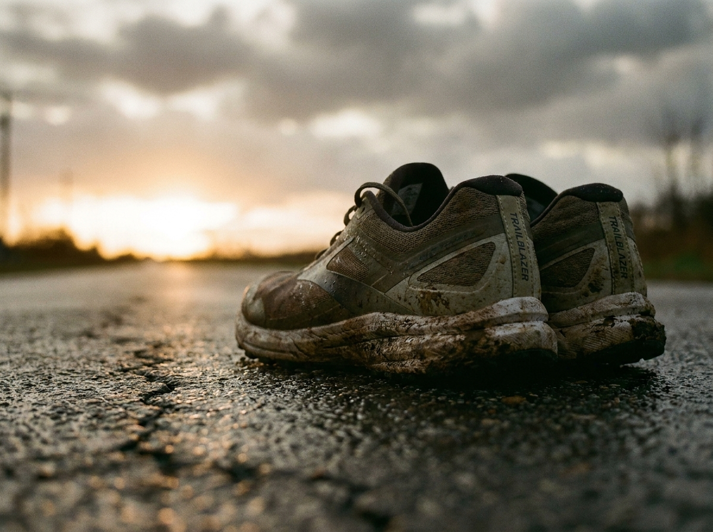
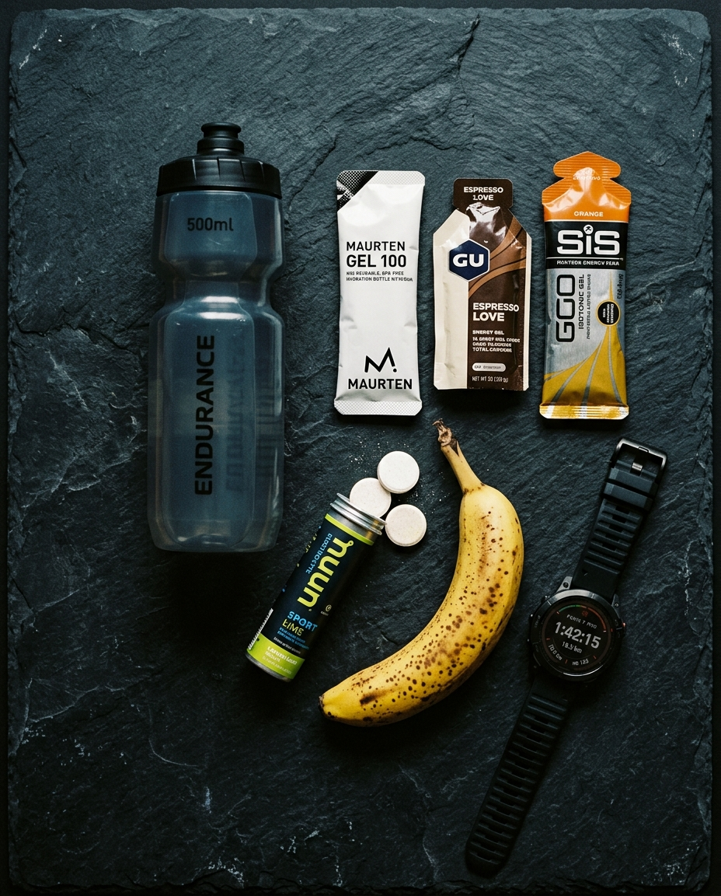

Training, gear, recovery and mindset. Practical, evidence-based articles to help you run more and better — injury-free.

Drop, cushioning and pronation — the guide to nailing your purchase.
Because running slow actually makes you run faster.

Sleep, hydration and nutrition — recovering is training too.
Strategies to manage discomfort and not give up.
What it is, how to measure it and how much to include in your week.
Adaptation happens at rest, not during the effort.
The +10°C rule and the fabrics that keep you warm without overheating.
Small systems that make training automatic.
The most underrated workout for building power.
Get the week's best article and one actionable tip straight to your inbox.